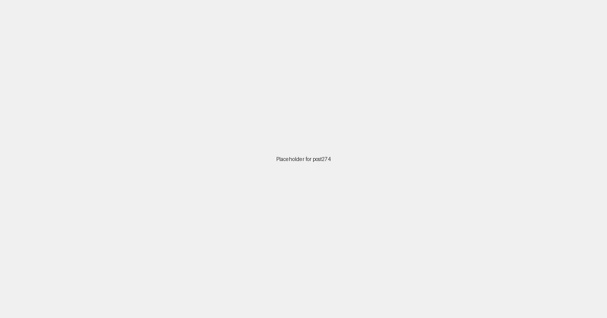

Local SEO for Auto Repair Shops: Driving More Customers to Your Garage in 2026

For auto repair shops, trust, expertise, and a quick turnaround are paramount. When a check engine light flashes, brakes start squealing, or it's time for routine maintenance, vehicle owners don't have time to sift through endless options. They need a reliable mechanic, and they'll turn to Google to find one. If your auto repair shop isn't appearing prominently in those "auto repair near me" searches, you're missing out on urgent, high-value leads.
Why Local SEO is Crucial for Auto Repair Shops
Unlike national chains, independent auto repair shops primarily serve a specific geographical area. Local Search Engine Optimization (SEO) is the tailored strategy designed to ensure your business is seen by potential customers within your service radius. In 2026, with the dominance of mobile searches, voice commands, and AI-driven recommendations, a robust local SEO strategy is non-negotiable for automotive service success.
Key Components of a Winning Local SEO Strategy for Auto Repair Shops:
-
Google Business Profile (GBP) Optimization: Your Digital Garage Door
Your Google Business Profile is often the first point of contact for potential customers. Optimizing it is paramount:
- Accurate & Consistent NAP: Ensure your business Name, Address, and Phone number are identical across all online platforms. Inconsistent information can confuse search engines and customers.
- Define Service Areas: Clearly specify all cities, towns, and neighborhoods where you offer your auto repair services.
- Strategic Categories: Select the most relevant primary and secondary categories (e.g., "Auto Repair Shop," "Brake Shop," "Oil Change Service," "Tire Shop").
- Engaging Photos & Videos: Showcase your clean bays, certified technicians, state-of-the-art equipment, and examples of completed repairs. High-quality visuals build trust.
- Customer Reviews: Actively solicit reviews from satisfied customers. Respond promptly and professionally to all feedback, demonstrating excellent customer service and engagement.
- Utilize GBP Posts: Use posts to highlight promotions (e.g., "Spring Brake Check Special"), new services (e.g., "EV Battery Diagnostics"), or seasonal maintenance tips.
-
Local Keyword Research: Understanding Your Customers' Engine Problems
Identify the specific terms local residents use when searching for auto repair services. These are typically service-specific and location-specific:
- "tire change [city/neighborhood]"
- "check engine light diagnostic [city/neighborhood]"
- "brake repair [city/neighborhood]"
- "oil change [zip code]"
- "transmission service [city/neighborhood]"
Integrate these keywords naturally into your website content, GBP descriptions, and online directories.
-
On-Page SEO for Auto Services: Signaling Local Relevance
Your website needs to be structured and optimized to clearly communicate your service areas and expertise to search engines:
- Dedicated Service Area Pages: Create individual pages for each key service you offer in each major service area (e.g., "Brake Repair in [City A]," "Oil Change in [Suburb B]," "Tire Replacement in [Neighborhood C]").
- NAP on Every Page: Embed your consistent Name, Address, Phone number on every page, ideally in the footer or header.
- Schema Markup: Implement local business schema markup to provide search engines with structured data about your business, making it easier for them to understand your offerings and location.
- Valuable Content: Publish blog posts and articles on common car problems, preventive maintenance, and new automotive technologies. This establishes your authority and provides value to potential customers.
-
Citations and Local Directories: Building Online Mentions
Ensure your business's NAP information is consistent across numerous online directories. This builds trust and authority with search engines:
- Yelp, Carfax, RepairPal, Yellow Pages
- Local Chambers of Commerce and business associations
- Industry-specific directories for automotive professionals
- Social media profiles (Facebook, Instagram, LinkedIn)
-
Local Backlink Building: Enhancing Authority
Acquire backlinks from other reputable local businesses and organizations. This signals to Google that your business is a trusted part of the community:
- Collaborate with local car washes, car dealerships (for service referrals), or towing companies.
- Sponsor local car shows, school events, or community safety programs.
- Offer your expertise for local news articles on vehicle safety or maintenance.
-
Mobile-First Design and Website Speed
Many urgent auto repair searches occur on mobile devices (e.g., roadside breakdowns). Your website must be fast-loading, responsive, and easy to navigate on smartphones to provide a seamless user experience, especially for emergency services.
Powering Your Auto Repair Shop with LocalLeads
At LocalLeads, we understand the specific digital marketing needs of auto repair shops. Our platform is designed to rapidly generate highly optimized, location-specific landing pages that precisely target your service areas and customer demands. By leveraging our technology, you can effortlessly create hundreds of SEO-rich pages that speak directly to local residents urgently searching for automotive solutions.
Imagine having a dedicated webpage for "Emergency Brake Repair in [Downtown District]," "Oil Change in [Suburb X]," or "Pre-Purchase Car Inspection in [Neighborhood Y]." Each page is meticulously crafted to achieve high rankings in local search, consistently delivering qualified leads without the continuous effort of manual SEO optimization.
Ready to Accelerate Your Lead Generation?
Don't let your competitors drive away with your potential customers. Invest in a smart local SEO strategy designed for your auto repair shop. With LocalLeads, you can automate much of this critical process, freeing you to concentrate on delivering exceptional vehicle service.
Explore how LocalLeads can transform your online visibility and bring more customers to your bays today!